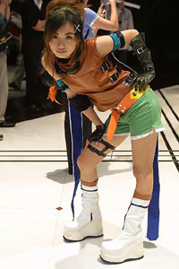

Final Fantasy I
 De: La Frikipedia, la enciclopedia extremadamente seria.
De: La Frikipedia, la enciclopedia extremadamente seria.
«Por lo que ha logrado llegar a esas profundidades. Lo felicito. Pero su viaje termina aquí, me temo.»
~ Cerberus hacia Kerberus por plagiar el nombre.
De la serie Videojuegos:
Final Fantasy I

Tifa Lockhart no aparecía sino recién hasta Final Fantasy VII... ¡pero a quien le importa!
| Desarrollado por:
|
Sakacuchiguchi Hironobu
|
| Distribuido por:
|
El mismo de arriba
|
| Diseñado por:
|
Square
|
| Motor
|
Similar a un Mitsubishi en esa época
|
| Género(s)
|
RPG (Rol para Gilis)
|
| Fecha de lanzamiento:
|
18 de diciembre de 1987
|
| Modos de juego:
|
sólo uno
|
| Requisitos:
|
es casi imposible en NES para distrubuir largas horas
|
| Disponible en:
|
Desde Noentiendo
|
| Formatos:
|
Cartucho, CD-ROM
|
| Edades:
|
20, y le hicieron un honor
|
| Puntuaciones:
|
11/10 (según Japón)
|
El inicio de esta saga
Final Fantasy es un videojuego de fantasía erótica creado en los 80 por Square para sobrevivir a una crisis económica, en la que la compañía está sufriendo y con este juego, será la despedida. Sin embargo, lograron alcanzar las ventas, y por éste orgullo, es la tercera franquicia más importante de los videojuegos, superado por Super Mario Bros y Megaman, especialmente por la séptima gracias a la buenorra Tifa Lockhart.
Acerca del juego
Se trata de una historia en tres continentes. Los poderes son representados por cuatro cristales, cada uno con su propio elemento: tierra, fuego, agua y viento. También numerosas razas como elfos gays, putas sirenas, robots que sirven como consolador, y dragones, cada uno tiene su pinche propio pueblo.
400 años antes, los habitantes de Lufenia usaron al cristal del viento para hacer aeronaves y una estación (Mierda Castillo Flotante), pero al contaminar el aire, se oscureció. 200 años después, ocurrieron grandes tormentas que inundaron una civilización oceánica, después se oscurecieron las otras dos, la tierra fue quemada y pudrida con mierda el pueblo de Melmondia. El sabio Luka predijo que llegarían de un goatse cuatro Guerreros de la Luz con cuatro cristales para salvar el mundo.
El mapa dispone de cuevas, bosques, pantanos, y hasta puticlubs. Aleatoriamente se te aparecen los monstruos, sólo encontrados por tierra y por mar. Puede navegar en barco, canoa y una aeronave por el progreso.
Personajes
 Así son los personajes de Final Fantasy.
Cada personaje tiene una clase diferente entre ellas:
- Guerrero: Da grandiosas cabreadas a los enemigos y es el más fuerte.
- Ladrón: Puede robar hasta por el culo.
- Monje: Dispone de nunchakus y es el preferido de Dios.
- Mago rojo: Es un gay que puede hacer dos magias a la vez.
- Mago blanco: De sexo dudoso, dispone de magia blanca. Está secretamente enamorado del negro.
- Mago negro: Similar al mago blanco, pero dispone de magia negra. Está secretamente enamorado del blanco.
Otras clases avanzadas para los primeros tres sólo disponen de magia hasta nivel 4.
Historia
La Historia de Final Fantasy es tan larga que llevará muchísimas secuelas hasta poder termianrla...
Inicios
Inicia desde Cornelia, donde el rey acude a los cuatro para salvar a Sara de Garland, quien se encuentra en el templo del Caos. Despúes de salvar, el reino construye un puente hacia Pravoca, donde se enfrentan con 9 piratas y al vencer, obtienen un barco, pero se encuentran atrapados en un mar por rocas y requieren de NitroPolvazo, la tiene el príncipe de Elfheim, pero tiene sueños mojados eternos por Astos, van hacia la cueva de Montoya Matoya pero no puede conseguir el brebaje sin el ojo de cristal.
Más tarde, un traidor príncipe necesita la corona, y con ella se revela como Astos, un elfo transexual, después de derrotar, obtienen el ojo para Matoya y preparan el brebaje para el príncipe.
Cristal de la Mierda Tierra
El pueblo de Melmondia está arruinado y la gente dice que un vampiro es el causante de ésta hecho, los cuatro se enfrentan contra el vampiro, pero la tierra sigue seca. Pronto descubren a Lich, un demonio esquelético de 207 huesos (ya sabemos del otro) el que ocasionó la putrefacción de la tierra y lo derrotan.
Cristal del Fuego
Marilith se ubica en el monte Gulgui y los cuatro van en una canoa. Después de derrotar a Marilith, Bahamut necesita una culo cola de rata de la ciudad de Reto, a cambio de mejoras de magia y posibilidades físicas.
Cristal del Agua
En Onlak, los cuatro van a un barril sumergible que los envía al Sntaro Hundido, pero una sirena no los deja ir, porque requiere de una droga llamada Oxilíquido. Compran un hada en una caravana en el desierto y al ir a otro pueblo, el hada se escapa, pero lo encuentras en un lago. Ella te dará la droga.
Después, los cuantro se reencuentran con la sirena y les da un Submarino. Allí, pelean contra el mítico Kraken de 8 tentáculos, con uno oculto, después de derrotarlo, se restaura el Cristal del Agua.
Cristal del Aire y la reaparición de Garland
Un robot les entrega el Telecubo, los cuatro viajan hacia Lufenia, pero hablan diferente, con la Piedra Roseta pudieron hablar su idioma y tuvieron un pase a Tiamat, un dragón de 6 cabezas con uno de más y al derrotarlo, restauraron el Cristal del Aire.
Los cuatro cristales crean un goatse hacia el Santuario del Caos, allí encuentran a Garland, que fue ayudado a transportarse al pasado por los cuatro demonios, incluyendo a Chuck Norris.
Garland se transforma en Caos, primo del Ciberdemonio que carece de lanzacohetes, y al derrotarlo, el mundo es salvado.
Dawn of Souls y Anal Anniversary

Así son los jefes del Final Fantasy
Aparecen cuatro lugares donde se encuentran más jefes.
- Earthgift Shrine: A la entrada te espera un gnomo simpático, al entrar a la puerta hay 5 niveles en donde tienes que pelear con 4 jefes.
- Cerberus: Este mítico personaje lanza truenos. Tal como en la cita de arriba y siempre está cabreado odia a Kerberus y desea volver del infierno a la Tierra para matarlo y después violar a Sakura.
- 2-Headed Dragon: De gran ataque físico, doble cabeza y dos más. En la tercera te madrea con hostias desde 5000 de daño, pero en esta parte, es bastante inútil.
- Echidna: Plagió a Spiderman (solo a colgarse del techo).
- Ahriman: Monstruo inútil mágico. De los cuatro es el que más cabrea.
- Hellfire Chasm: A la entrada te espera un elfo, al entrar a la puerta hay 10 niveles en total, pero en la quinta, debes enfrentar a un jefe.
- Scarmiglione: Al principio lo verás débil, pero en la segunda está cabreado.
- Cagnazzo: Tortuga acuática que te lanza chorros (cualquiera).
- Barbariccia: La más puta y buenorra de los jefes que ataca con aire.
- Rubicante: Mago de fuego que te dará calentadas.
- Lifespring Grotto: A la entrada aparecerá una sirena que te da la información más interesante del mundo: "Los hombres se enamoran de las sirenas y en ese lugar van a su luna de miel".
- Gilgamesh: Es el que más cabrea en toda la saga que sólo quiee espadas para
porculizar matar a cualquiera que lo haga cabrear (obviamente). Se exilió de Excalibur.
- Atomos: Roca de desconocidos ataques como el agujero de gusano.
- Shin-Ryu: Dragón zombie guardián de Omega.
- Omega: Hijo bastardo de Omega Weapon, te ataca con depilar mal la entrepierna.
- Typhon: Es el más retrasado de todos con un coeficiene intelectual muy bajo, pero sólo le gana Recoome.
Orto Orthros: Pulpo muy amigo del retrasado de arriba. Riega con su tinta hacia la cara de cualquiera.- Phantom Train: A éste le operaron el crecimiento de su capacidad. Amenaza con estrellarte o rociarlo con lluvia ácida.
- Death Gaze: Espectro sin piernas que ataca como el manicurista.
- Sólo en el PSP puedes pelear contra Chronodia, que te atacará a
hostias leches en el combate.
Magia
Orcho y Caperucita Roja son personajes del Final Fantasy con grandes poderes mágicos.
Comunes
- Cure, Cura, Curaga, Curaja: Simplemente aumenta de salud hasta una bolsa de hielo para toda ocasión.
- Dia, Diarrea, Diarrgea, Diarrjea: Los enemigos muertos sufrirán diarreas explosivas hasta morir otra vez.
- Protect, Protera: Aumenta la defensa, hasta lo más importante.
- Blink
182: Sólo el quien hace magia, evita la mayoría de los ataques.
- Thunder, Thundara, Thundaga: Lanza trueno hacia el enemigo.
- Fire, Fira, Firaga: Lo mismo de arriba, pero con fuego.
- Blizzard, Blizzara, Blizzaga: Lo mismo de arriba, pero con hielo.
- Temper: Aumenta el ataque de todo tipo.
- Invis, Invisira: Es el mismo de Blink, pero la segunda es hacia el equipo.
- Haste: Dobla la velocidad de tus ataques.
- NulBlaze, NulShock, NulFrost y NulDeath: Reduce la mitad del daño de los de mencionados de izquierda.
- Life, Full-Life: Dios manda ángeles para revivir jugadores dados de hostia.
Fuera de lo común, sin descubrir
- Taringa: El foro te busca una guía completa del juego.
- Poringa: El mismo de arriba pero aumenta la fuerza de los personajes masculinos.
- Bazinga: Invoca a Sheldon Cooper para cabrear con su palabrota a los enemigos hasta matarlos.
¿Sabías que...
- ...en la novena reviven los cuatro jefes con Garland, posiblemente desnudos, como en el caso de Lich?
- ...y en esa misma saga, Vivi plagió a un hechicero negro?
- ...hay solamente dos zurdos en toda la serie: Kain y Freya, y que uno de ellos tiene como descendiente a Mio Akiyama?
- ...y que dicho lo anterior, los guerreros dragón son zurdos?
- ...y que Bahamut también lo es?
- ...y también tiene problemas del bueno-malo, como en el caso de la tercera y octava?

|
Logro Desbloqueado
100 - Vence a Chronodia sin que él te de el hostiazo total G
|
|
|
 Shooter Shooter
 Terror Terror
 Velocidad Velocidad
 Rol Rol
 Estrategia Estrategia
 Aventuras Aventuras
 Fight! Fight!
 Clásicos Clásicos
 Deportivos Deportivos
 Aventura gráfica Aventura gráfica
 Novela visual Novela visual
 Personajes de videojuegos Personajes de videojuegos
|
Autor(es):
- Mad Max
- Shadowmura
- FaVonFriki
Frikipedia 2005-2016, Licencia
GFDL 1.2 - Extraído por FrikiLeaks